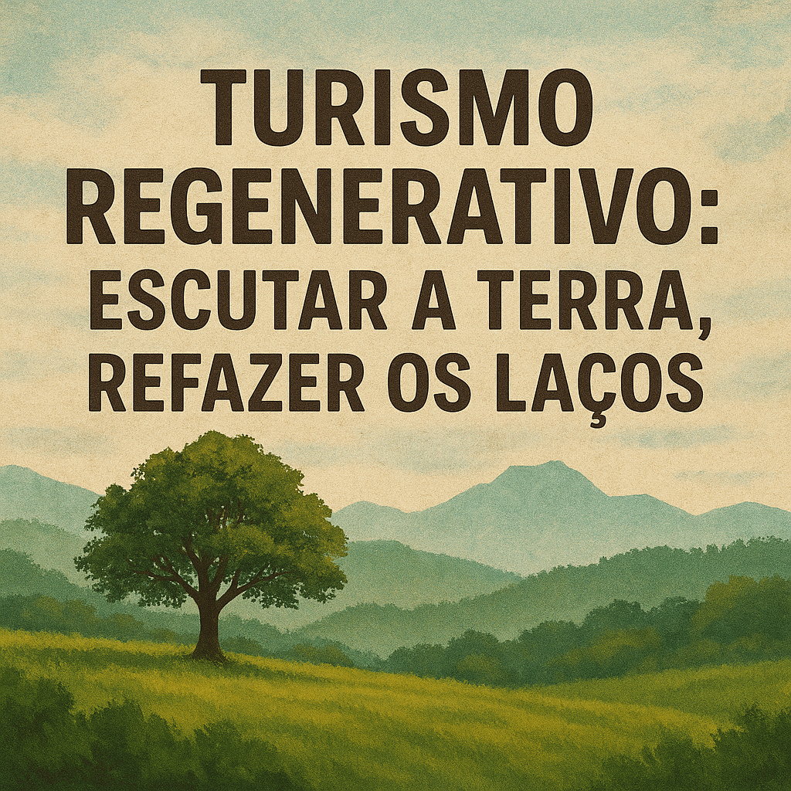

TURISMO REGENERATIVO: ESCUTAR A TERRA, REFAZER OS LAÇOS
Por Michele Leandro da Costa
29/07/2025 às 09:01

Entre as muitas feridas abertas pelo Antropoceno, talvez a mais profunda seja a ilusão de separação entre o ser humano e a terra. Ao romper com os ritmos da natureza, a humanidade perdeu também parte de sua própria inteireza. Como alerta Ailton Krenak, não há futuro possível sem reconexão, sem resgatar a memória do pertencimento.
Foi nesse contexto de esgotamento, de paisagens, relações e sentidos, que a sustentabilidade surgiu como uma promessa de reconciliação. Durante um tempo, encantou: virou lema, selo, plano de ação. Mas, ao ser absorvida pelas engrenagens do mercado, perdeu fôlego. As intenções permaneceram; os gestos, nem sempre. A promessa era boa, mas o sistema, apressado demais para esperar pelo cuidado.
É nesse hiato entre desejo e prática que desponta o turismo regenerativo. Não como aperfeiçoamento, mas como outra forma de se relacionar com o mundo. Um convite para voltar a caminhar com os pés na terra e os olhos abertos para os vínculos. Um chamado à escuta, ao pertencimento, à reparação. invadir. É deixar-se tocar.
Esse novo horizonte exige mais do que boas intenções: exige ética e filosofia caminhando juntas. O turismo regenerativo dialoga com a ecologia profunda, proposta por Arne Naess, que afirma o valor intrínseco de tudo o que compõe um ecossistema, humanos e não humanos, animados e inanimados. Também convoca a bioética, ao nos fazer refletir sobre os limites e as responsabilidades das ações humanas; e incorpora a provocação de Félix Guattari, ao falar das três ecologias, a do meio ambiente, a das relações humanas e a da subjetividade.
Regenerar, aqui, é restaurar não só a terra, mas também os vínculos e os modos de ser. É reconhecer que a ferida do planeta é também uma ferida na alma do mundo.
Carol Sanford, Daniel Christian Wahl e outros pensadores do camporegenerativo defendem que os territórios devem ser compreendidos como sistemas vivos, com identidade própria e potenciais únicos a serem cultivados. Regenerar não é mitigar. É curar! É devolver potência onde houve esgotamento. É ativar as forças vitais de um lugar e, com elas, as de quem o visita.
Nesse caminho, o turismo deixa de ser produto para virar aliança. A hospitalidade se torna gesto de troca, e o visitante, um coabitante temporário. É preciso tempo, escuta, respeito. É preciso chegar com os pés leves e o coração disponível.
Em experiências reais como na Toscana, em comunidades indígenas brasileiras ou nas reservas amazônicas já se vê o florescer desse novo modo de viajar. São lugares onde o turismo não explora, mas fortalece; não extrai, mas compartilha. E onde cada encontro é uma oportunidade de regenerar também a esperança.
Viajar, nesse horizonte, é um ato de responsabilidade. É um gesto político, afetivo, espiritual. É dizer que o mundo não precisa de mais consumo, mas de mais vínculos. Que os destinos não precisam de visitantes apressados, mas de presenças inteiras.
E que há caminhos que curam, desde que quem os percorra esteja disposto a ser também transformado.
**Michele Leandro da Costa é professora do curso de Turismo e Negócios da UNESPAR (campus Apucarana - PR) e mestranda no PPGTurH da UCS. Caminha acreditando que outro turismo, mais justo, mais vivo, mais humano, não só é possível, como necessário.**